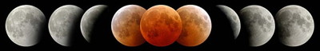

A quoi sert Lunar Eclipse Maestro?
Lunar Eclipse Maestro est un gratuitiel pour automatiser la photographie des éclipses de Lune. Toute diffusion commerciale est interdite. Ce logiciel vous permet de contrôler jusqu’à quatre appareils photographiques numériques (APNs Nikon et Canon, plus la gamme Nikon Coolpix et maintenant quelques APNs Panasonic, Sony, Fuji et Olympus) connectés en USB ou Firewire pendant une éclipse afin que vous puissiez l’observer librement. Jusqu’à quatre caméras CCD SBIG avec les roues à filtres sont aussi supportées. Au préalable vous devez préprogrammer toutes les expositions dans un script. Les coordonnées de l’observateur (latitude, longitude et altitude) sont utilisées pour calculer les circonstances locales afin que les différentes prises de vue soient référencées par rapport à des phases de l’éclipse. Toutes les fonctionnalités sont optionnelles, le logiciel pouvant être utilisé comme vous le souhaitez.
La première version, non publique, a été validée avec succès lors de l’éclipse totale de Lune du 21 décembre 2010 à Monument Valley dans le sud-ouest des États-Unis.
Il existe une application similaire appelée Solar Eclipse Maestro pour les éclipses de Soleil.

Configuration matérielle et logicielle
- Il existe deux versions de ce logiciel: la première est Universal Binary, c’est-à-dire qu’elle peut s’exécuter sur les Macs Intel et PPC, et fonctionne avec MacOS X 10.4.x (Tiger) jusqu’à jusqu’à MacOS X 10.14.x (Mojave); la deuxième fonctionne seulement avec MacOS X 10.6.x (Snow Leopard) jusqu’à MacOS X 10.14.x (Mojave). La première supporte les anciens Canon (EOS 350D/Rebel XT/Kiss N, 20D/20Da et 5D), mais pas ceux sortis après le 60D; cela reste vrai jusqu’à Yosemite, ensuite avec El Capitan et plus récent cette version ne peut plus contrôler aucun APN. Tandis que la version Intel ne supporte pas les anciens Canon, mais par contre tous les derniers modèles sont reconnus. Un écran avec une résolution de 1024x768 pixels minimum est conseillé. Toutefois, l’application fonctionnera avec un écran plus petit.
- Pour pouvoir utiliser les caméras CCD SBIG vous devez installer au préalable le pilote SBIG qui est fourni avec l’installeur. Cette fonctionnalité n’est disponible qu’avec Leopard ou plus récent.
- Un ou plusieurs ports USB ou Firewire sont nécessaires pour les APNs ainsi que les GPS et/ou câble USB pour le contrôle du déclencheur (DSUSB de Shoestring Astronomy) optionnels.
Aperçu
- Cette application utilise des informations provenant de Nikon, Canon, SBIG, Panasonic et Ricoh. Toutefois aucun pilote particulier n’est nécessaire pour piloter les appareils numériques supportés.
- A travers une connexion USB ou Firewire, jusqu’à quatre appareils photographiques numériques peuvent être contrôlés à l’aide d’un script (voir la liste des appareils supportés). Pour une plus grande rapidité et fiabilité les photos sont stockées directement sur la carte mémoire, et non transférées vers l’ordinateur.
- Il est possible de prendre des photos en rafale à travers la connexion USB ou Firewire. Leur nombre est limité par l’APN (typiquement de 3 à 10 par seconde).
- A travers une connexion USB ou Ethernet, jusqu’à quatre caméras CCD SBIG avec les roues à filtres peuvent être contrôlées à l’aide d’un script. Les images sont automatiquement transférées sur l’ordinateur.
- Des fichiers son peuvent être joués et servir de rappel. Pensez aux personnes autour de vous quand vous utilisez cette fonctionnalité.
- Support des GPS Garmin avec connexion USB pour fournir la position et l’heure, de tous les récepteurs GPS compatibles NMEA 0183 en USB ou Bluetooth. Précision élevée lors de l’utilisation d’un Garmin GPS18-LVC grâce à l’utilisation du signal fournissant une impulsion par seconde (signal PPS). Pour une précision maximale du minutage, les latitude, longitude et altitude du site d’observation doivent être connues à moins de ≈200 mètres, et l’horloge du Mac doit être réglée à moins de ≈0,5 seconde, ce qui requiert une mesure GPS le jour de l’éclipse. Tous les GPS Garmin USB utilisant le protocole propriétaire Garmin PVT (non testé avec un câble série et un adaptateur série-USB) sont supportés ainsi que la plupart des récepteurs compatibles NMEA 0183 en USB, série ou Bluetooth.
- Calcul et affichage des circonstances locales de l’éclipse, avec possibilité dans le script de lier dans le temps les actions photographiques aux différentes phases de l’éclipse (par exemple «5 secondes après le second contact avec l’ombre», «grandeur de la pénombre de 50%», ...) ou encore de faire directement référence à des dates et heures en Temps Universel.
- Les corrections pour la réfraction et ΔT sont prises en compte. L’heure UTC est utilisée pour une précision inférieure à la seconde.
- Possibilité de modifier manuellement les horaires des événements précalculés.
- Décalage par rapport à l’horloge de l’ordinateur: une compensation peut être saisie quand aucun GPS n’est connecté.
- Support du temps simulé (permet de faire une simulation sans modifier l’horloge du Mac) pour faciliter une répétition générale en se plaçant dans les conditions de l’éclipse.
- Schéma des positions relatives de la Lune et de l’ombre/pénombre terrestre et affichage du compte à rebours jusqu’au prochain événement.
- Carte de l’éclipse avec affichage dynamique des coordonnées géographiques du curseur ainsi que du type de l’éclipse. Un schéma au maximum de l’éclipse depuis le lieu survolé peut aussi être affiché.
- Animation du terminateur solaire sur la carte de l’éclipse.
- Carte du ciel au moment du maximum de l’éclipse.
- Possibilité de synchroniser automatiquement la date et l’heure de l’appareil photographique quand celui-ci le permet.
- Support des modes d’exposition Manuel (M), Bulb (B) et Auto Programmé (P).
- Plusieurs APNs peuvent être déclenchés simultanément.
- Affichage des prochaines lignes du script.
- Les combinaisons de touches ⌘1-⌘4 déclenchent l’obturateur des différents APNs.
- Support du mode Vue Instantanée ou encore Live View (Lv) pour faciliter la mise au point.
- Possibilité de générer des fichiers des zones de visibilité de l’éclipse et de sa géométrie pour Google Earth et pour les GPS.
- Mode vision nocturne pour conserver votre adaptation à l’obscurité.
- Possibilité de sauvegarder puis de relire plus tard les multiples lieux d’observation de l’éclipse.
Limitations
- Mode d’exposition longue durée B (Bulb) non supporté.
- Les scripts sont des fichiers texte au format CSV (valeurs séparées par une virgule) qui doivent être enregistrés avec un simple éditeur de texte comme TextEdit ou TextWrangler. Seules les extension de fichier .txt et .csv sont acceptées. Attention, ouvrir un script CSV avec Microsoft Excel modifiera les heures.
- Ne fonctionne qu’avec les appareils numériques Nikon, Canon, Panasonic, Sony, Fuji et Olympus plus les appareils Ricoh Theta pour l’instant, mais le support d’autres fabricants pourra être ajouté plus tard si il y a une demande suffisante.
Appareils supportés
Nikon
|
Canon
|
Santa Barbara Instrument Group (SBIG)
Sony
Panasonic
Fuji
Olympus
Ricoh
|
|
(*) Fonctionne seulement avec la version Intel de l’application |
||